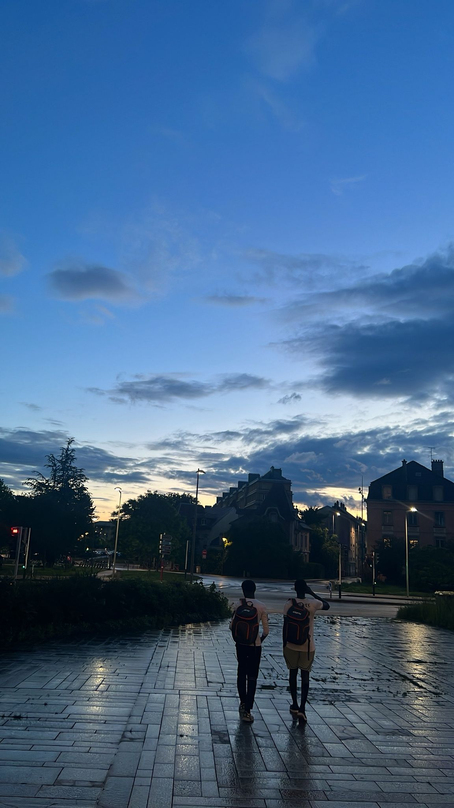
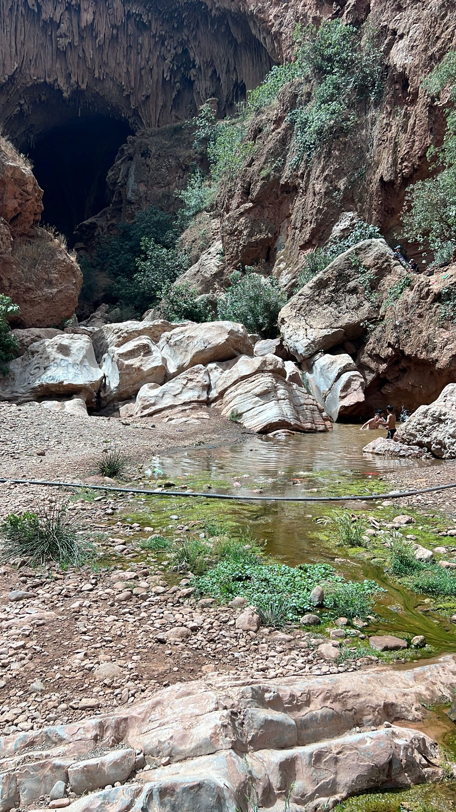
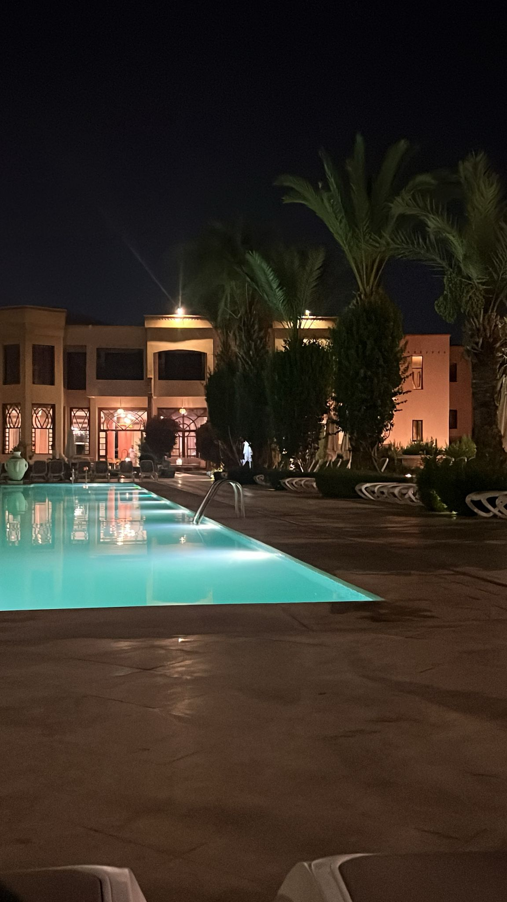

Photographie
J’aime la photographie parce que ça me force à observer : la lumière, les détails, les émotions. C’est un vrai moyen de raconter une histoire sans forcément parler.



En dehors du cadre académique, j’aime explorer des activités créatives et humaines : capturer des instants en photo, créer avec l’art (peinture, maquillage), cuisiner et pâtisser, et comprendre les gens à travers la lecture — avec une passion particulière pour la littérature africaine.
J’aime la photographie parce que ça me force à observer : la lumière, les détails, les émotions. C’est un vrai moyen de raconter une histoire sans forcément parler.
J’aime tout ce qui est artistique : peindre, tester des styles, et le maquillage comme forme de création. Ça me permet d’exprimer une ambiance et une identité, même avec des choses simples.
J’adore cuisiner et pâtisser : tester des recettes, organiser un plat, faire attention aux textures et aux goûts. Pour moi c’est à la fois du partage et de la précision.
J’aime comprendre la psychologie humaine et découvrir des sujets variés grâce à la lecture. J’ai une passion particulière pour la littérature africaine, parce qu’elle transmet des histoires, des cultures et des points de vue très forts.